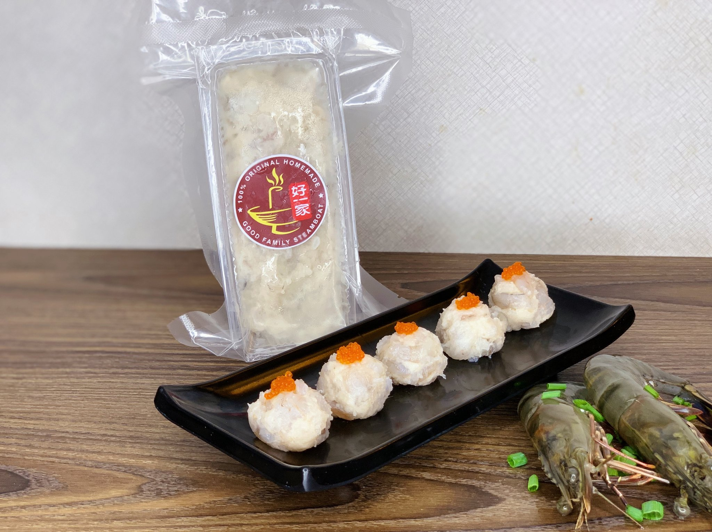
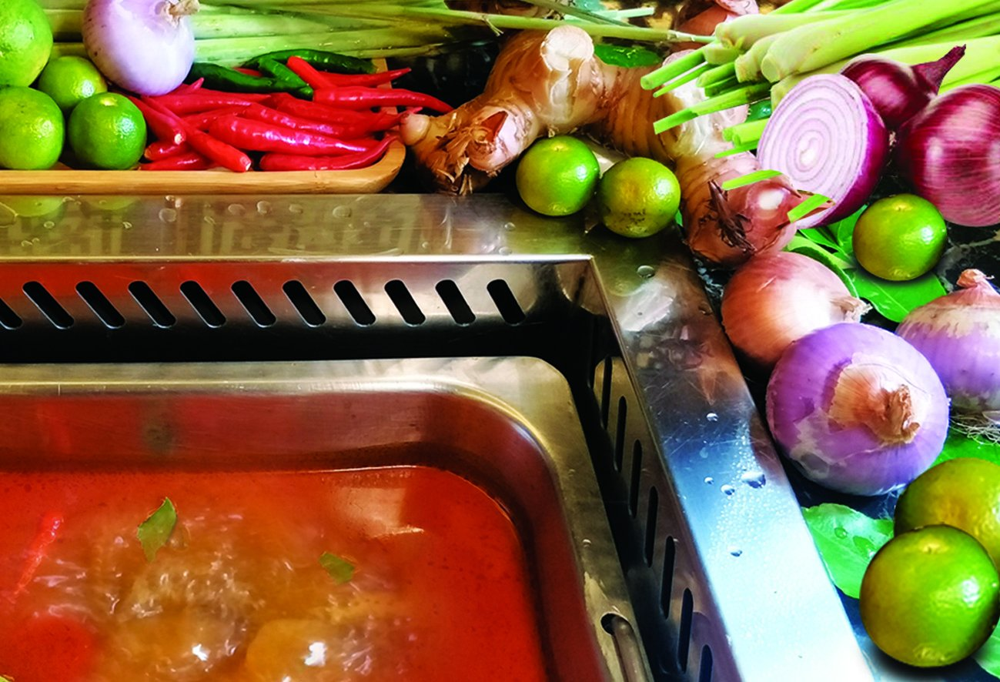
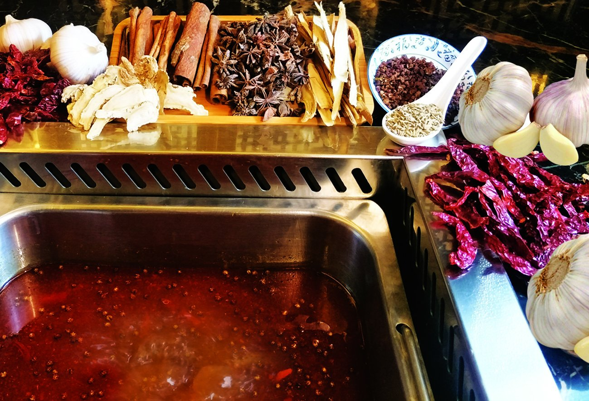
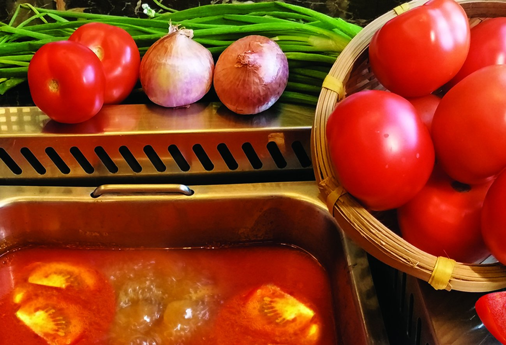

1. Heat 6 tbsp. of the butter in a large skillet until it is hot and foaming. Add the shrimp, salt, and black pepper
and cook over high heat, stirring often, for 4–7 minutes, until the shrimp are pink and cooked through.
2. Remove the skillet from the stove and use a slotted spoon to transfer the cooked shrimp to the bowl of a food
processor fitted with a steel blade. Return the skillet to the stove and add the sherry, lemon juice, and cayenne.
Cook over high heat until the liquid in the skillet is reduced to approximately 3 tbsp. and is quite syrupy.
Immediately add this to the shrimp in the food processor and process until the shrimp are thoroughly puréed. With the motor running,
add the remaining butter, a few pieces at a time, and process until thoroughly blended. Turn the food processor off and carefully taste
the shrimp paste for seasoning, adding more salt, black pepper, sherry, lemon juice, or cayenne as needed. Transfer the shrimp paste to a
ceramic crock and allow to cool completely. If not using right away, cover the shrimp paste and refrigerate for up to 1 week.

1. In a pot, bring 3 cups of water to boil. Then add a big handful of shrimp/prawn heads. Boil the shrimp head until the water turns slightly
orange in color. Press the shrimp heads with spatula to extract the "goodies" from their heads. Let the stock reduce to slightly more than 2 1/2 cups.
Drain the shrimp stock and discard the shrimp heads.
2. Add lemongrass, galangal, kaffir lime leaves, bird's eye chilies, mushrooms, nam prik bao to the shrimp stock and bring it to boil. Add in the shrimp and
fish sauce. Lastly, add the lime juice (if you add lime juice too early, the soup might turn bitter). Boil until the shrimps are cooked, dish out and serve
hot.

1. Prepare the necessary medicinal soup ingredients, red dates and wolfberry,
and wash the red dates and wolfberry to soak the hair with the medicinal materials you bought.
Put all the ingredients in a casserole, turn to low heat and simmer for about 30 minutes after boiling.
Separate the medicinal dregs from the soup, and take the medicinal soup for later use.
2. Finely chop green onion, mince garlic and ginger. Heat the oil in the pot, add soaked chili, minced garlic,
minced ginger, pepper, green onion and stir fry until fragrant. Put the bean paste, if you like more red oil,
you can add more. Put in the dried red pepper that has been washed in advance. Put in a large bowl of big bone
soup prepared in advance. Put it in the medicinal soup after boiling. Finally add butter, salt, and appropriate amount
of chicken essence to taste. After boiling, you can start to eat.

1. First hit a cross knife on the tomatoes. Blanch in boiling water for 5 minutes, pick up, peel and cut into cubes. Then pour a little oil into the pan,
add the green onion, ginger, and garlic when the oil is hot, and then add 3 tablespoons of tomato paste and stir fry for a few times, then add the diced
tomatoes and stir continuously over low heat.
2. When the diced tomatoes are fry until the juice is soft, add an appropriate amount of broth and boil on high heat, then reduce the heat to simmer. When
the tomatoes are soft and rotten, add an appropriate amount of salt and a little white sugar to taste, stir well and turn off the heat. The broth is made
with big bones. You can usually make more and freeze it in the refrigerator. Finally, add your favorite meat or vegetables to brush
as much as you like